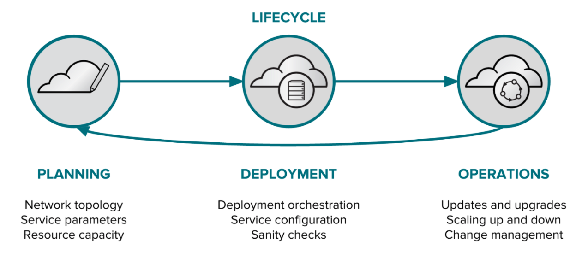
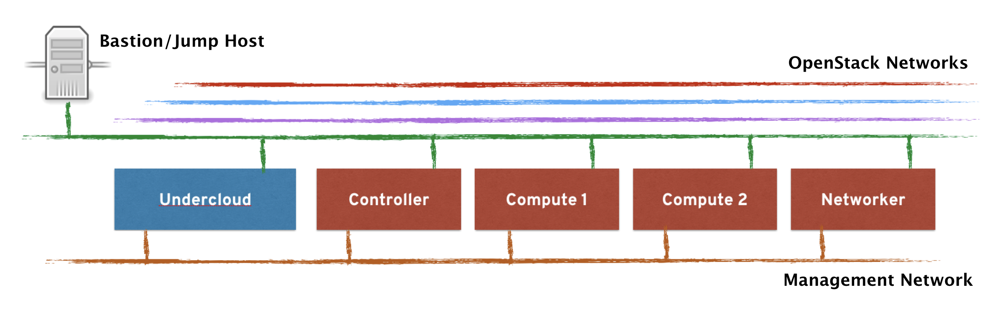
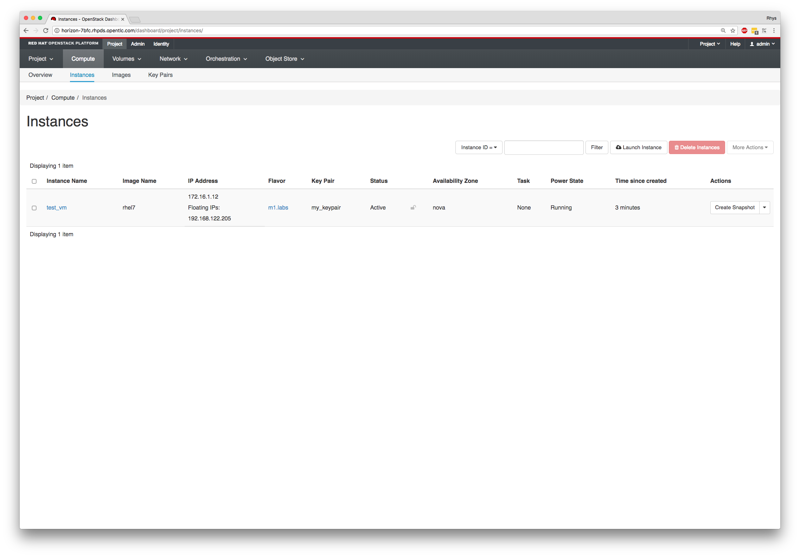

Lab Update - 4th June 2018
This lab has now been updated to run on the Red Hat Product Demo System (RHPDS) and so Summit instructions have been removed in favour of specific instructions for RHPDS. You can skip to the first lab section if you're following this post-Summit. If you have any questions or any problems accessing this content, please let us know.
Title: Hands on with Red Hat OpenStack Platform director (L1010)
Date: 4th May 2018
Authors:
First of all, it's my pleasure to welcome you to the Red Hat Summit 2018, here at the San Francisco Moscone Centre! The past few years have been an exciting time for both Red Hat and the OpenStack community; we've seen unprecedented interest and development in this new revolutionary technology and we're proud to be at the heart of it all. Red Hat is firmly committed to the future of OpenStack; our goal is to continue to enhance the technology, make it more readily consumable and to enable our customers to be successful when using it.
This hands-on lab aims to get you, the attendees, a bit closer to the deployment side of Red Hat OpenStack Platform, by utilising Red Hat OpenStack Platform director, Red Hat's deployment and lifecycle management tool for our OpenStack distribution. It's comprised of a number of individual steps inside of this lab-guide that will run you through some of the more common tasks, such as node initialisation, network configuration, OpenStack deployment, custom architectures, post-deployment modifications, and scaling operations. This will give you a solid foundation and a basic understanding of the tools that Red Hat are providing for ongoing OpenStack management, but given the short amount of time that we have for the lab, the activities have to be limited.
In the interest of time, we've provided a partially installed environment where the deployment tools are ready to go, but we will have to go through the major steps of OpenStack deployment. All of the machines that you'll be interacting with are virtual machines themselves, and are running on the workstation you're sat at, but have been configured to mimic real world hardware, so you shouldn't be disadvantaged with your experiences. Please start with the first lab, this will get you used to the environment infront of you and will allow you to get started.
NOTE: If you've not been provided with connection details or you do not see your unique session information on-screen, please ask and we'll ensure that access is provided.
If you have any problems at all, please put your hand-up and an attendee will be with you shortly to assist - we've asked many of our OpenStack experts to be here today, so please make use of their time. The materials are yours to take away with you, I hope that they'll be useful assets in the future.
NOTE: This information is provided for your information and understanding of the lab content and the principles of Red Hat OpenStack Platform director (and the components in which it's built from). If you're already confident with OpenStack deployment and the components of TripleO then you can skip this, or perhaps refer back to it if you're unsure during the lab steps.
Those that are familiar with OpenStack will already be aware that its deployment has (historically) been a difficult task. Deployment is a lot more than just getting the software installed - it’s about architecting your platform to make use of existing infrastructure investments as well as planning for future scalability and flexibility. OpenStack itself is designed to be a massively scaleable platform, in which its components can be distributed in a wide variety of configurations to meet the needs of the organisation. Each OpenStack component exposes a RESTful API for communication, and relies on a shared message bus and database backend for persistence and cross-service communication, and as a result there’s no “one size fits all” way of deploying an OpenStack platform, but there are some sensible choices that should be made.
Despite having a hugely distributed architecture, there are some deployment trends that have emerged since OpenStack’s inception. Most OpenStack deployments consist of machines that have a designated role, where such a role comprises of specific OpenStack components or supporting services that are grouped together to perform a specific job within the cluster, creating a much simpler architecture to design, implement, and eventually scale.

In the diagram, we’re showing a typical OpenStack deployment with most common roles identified. These usually comprise of a controller node, in which the cluster management and orchestration takes place, compute nodes in which virtual machines, or the workloads typically execute, and also storage nodes, where access to a workload’s persistent storage is managed. The way in which these various different role types are deployed across a given set of machines is important to get right to sensibly make use of available hardware resources, to ensure cluster stability in the event of failure, and to accommodate any future growth requirements within the environment. Utilising machines with an identical specification within a given role makes the support and maintenance easier, but critically provides predictability and consistency with overall infrastructure performance.
It’s also important to note that OpenStack should really be considered a framework for how an Infrastructure as a Service cloud could be constructed, and not a true implementation. This is due to its reliance on plugins and drivers to actually implement the functionality an organisation desires based on their existing technology choices. For example, a customer may already have a preferred storage or networking vendor; OpenStack, through its extensibility and plugin frameworks allow organisations to continue to leverage existing storage and networking investments, or have flexibility in utilising alternative choices later down the line, should a plugin or driver exist for that technology choice.
So it really isn’t a case of simply installing OpenStack - deployment also encompasses a suitable architecture design as well as ensuring that the chosen technologies can be integrated successfully. Given the vast number of ways that OpenStack can be architected, vendors such as Red Hat have outlined a number of best practices on how OpenStack components should be distributed, with high availability, workload resilience, future scalability, and ease of management at the heart of the design. Whilst the vast majority of vendors agree that grouping certain services together into roles makes deployment more simple, the means in which the components are installed and configured varies greatly across OpenStack distributions. Red Hat has always been an advocate of choice; it does not discriminate against a particular means of deployment but strongly recommends that customers utilise the official installation platform shipped with our products. By using the default tooling, customers are always deploying as per Red Hat’s recommended and best practices for the OpenStack deployment. This leads to a much more supportable configuration as the topology and configuration is well known and is constantly kept up to date with our latest recommendations. These best practices ensure that if a support issue does arise, we can react quickly to it, without having to spend time understanding the architecture that’s been implemented.
Red Hat OpenStack Platform version 7, based on the upstream Kilo release, introduced Red Hat OpenStack Platform director as the official deployment and ongoing management platform for our OpenStack distribution, and that’s what we’re going to be utilising during this lab. The high-level aim of OSP director is to allow organisations to start from nothing, and end up with a fully operational OpenStack installation, one that is robust, resilient, ready to scale, and is capable of integrating with a wide variety of existing customer technology choices and configurations. The concept of OSP director was to provide a tool that wasn’t just for the installation of OpenStack, but to truly become an ongoing lifecycle management platform. Red Hat realised that the initial installation of OpenStack was only a small piece of the puzzle when it came to our customers using the technology in production. As such, OSP director has been designed from the ground up to not only provide administrators with a mechanism for OpenStack installation but to bridge the gap between day-one activities, and the ongoing operational requirements of the environment. Red Hat has prioritised development in three major areas:

Firstly, the pre-deployment planning stage. OSP director provides a platform for administrators to pre-set the target architecture when it comes to networking and storage topologies, OpenStack service parameters, integrations to third party plugins, and any other configurations as may be necessary to suit the requirements of their organisation. It also ensures that target hardware nodes are prepped and are ready to be deployed used.
Secondly, the deployment stage. This is where the bulk of the OSP director functionality is executed. One of the most important steps is ensuring that the proposed configuration is sane, there’s no point in trying to deploy a configuration if we are sure it will fail due to pre-flight validation checking. Assuming that the configuration is valid, OSP director needs to take care of the end to end orchestration of the deployment, including hardware preparation, software deployment, and once up and running, ensuring that the OpenStack environment performs as expected.
Lastly, Red Hat has focussed on delivering day-two, or operational functionality to OSP director, allowing administrators to have visibility into the ongoing health of the environment and to perform life-cycle changes, such as adding or replacing OpenStack nodes for scaling and decommissioning purposes, and to also automatically upgrading between major versions, for example moving between OpenStack Mitaka and OpenStack Newton. OSP director has strong technology foundations, and is a convergence of years of upstream engineering work, established technology created for earlier deployment tooling, and technologies that came to us via acquisition. Red Hat has worked tirelessly to align these different technologies, taking in years worth of experience and expertise at deploying OpenStack at scale, which has allowed us to create a powerful, best of breed deployment tool that's in-line with the overall direction of the OpenStack project.
At the heart of OSP director is TripleO, short for “OpenStack on OpenStack”. TripleO is an OpenStack project that aims to utilise OpenStack itself as the foundations for deploying OpenStack. To clarify, TripleO advocates the use of native OpenStack components, and their respective API’s to configure, deploy, and manage OpenStack environments itself. The major benefit of utilising these existing API's with OSP director is that they're well documented, they go through extensive integration testing upstream, are mature, and for those that are already familiar with the way that OpenStack works, it's a lot easier to understand how TripleO (and therefore, OSP director) works. Feature enhancements, security patches, and bug fixes are therefore automatically inherited into OSP director, without us having to play catch up with the community. In addition Red Hat is providing, and is heavily contributing to, an upstream sanctioned mechanism of deploying OpenStack; this is not something that’s being built in isolation. Using TripleO ensures that we have community buy in and support for the future direction of the project.
One of the most important concepts to understand with TripleO is the notion of the undercloud, vs the overcloud. The diagram shown below attempts to visually demonstrate this:

With TripleO, there are two distinct types of cloud that are spoken of. The first to consider is the undercloud, this is the command and control cloud in which a smaller OpenStack environment exists that's sole purpose is to bootstrap a larger production cloud, known as the overcloud, where tenants and their respective workloads reside. OSP director itself is synonymous with the undercloud; OSP director bootstraps the undercloud OpenStack deployment and provides the necessary tooling to deploy an overcloud via the mechanisms of TripleO. As we'll see over the next couple of hours, TripleO relies on a number of key OpenStack components to deploy an overcloud, namely Heat for orchestration, Nova (and Ironic) for baremetal deployment, Neutron for network management, and many more to supply supporting services. From OSP12, TripleO deploys all OpenStack services in containers, which we'll also be exploring over the next few labs.
The environment that we're going to be using has been partially pre-installed for our convenience and to maximise the tasks that we can accomplish in the amount of time that we've been allocated for the lab. We've done our best to preconfigure the classroom and ensure that the cloud-based virtual machines that make up the infrastruture are ready to go at the start of the lab, but we need to ensure that you're able to log in to the environment, as the workstation you're at will be used for multiple different labs during the Red Hat Summit.
As we know, we're going to be using Red Hat OpenStack Platform director which uses the TripleO methodology for deployment, i.e. a smaller 'bootstrap' OpenStack cloud, known as the undercloud deploys the 'production' cloud known as the overcloud (where your workloads would actually run). In our environment, the undercloud has already been deployed for you, and an additional set of virtual machines have been pre-defined (but not yet provisioned) that will become the basis for our overcloud. All of these nodes, the undercloud, and all overcloud nodes are virtual machines are running within a dedicated and unique public-cloud based session just for you, roughly looking like the following:

The pre-defined nodes that will become our overcloud are defined as follows:
| Node Type | Quantity | CPU's | Memory | Storage | Networks |
|---|---|---|---|---|---|
| Controller | 1 | 4 | 12GB | 1x60GB | 1x Default/Trunk, 1x Provisioning |
| Compute | 2 | 4 | 6GB | 1x50GB | 1x Default/Trunk, 1x Provisioning |
| Networker | 1 | 2 | 4GB | 1x50GB | 1x Default/Trunk, 1x Provisioning |
NOTE: The networking interfaces described above are for reference at this point, they'll become a lot more important when we're configuring the networks for our overcloud nodes in a later step.
Using a virtualised infrastructure inside of the public cloud allows us to have full control over all of the network and storage without impacting other lab users, and whilst we won't be running any intensive workloads, it allows us to build up and test OpenStack in a short amount of time and with great flexibility. To re-iterate, we'll first be connecting to the jump host, and then further connecting to our undercloud machine as the conduit into our overcloud OpenStack environment once it has been deployed. The undercloud will be used for both executing commands on the overcloud, and also as a conduit for connecting to our overcloud nodes and any deployed resources when required to do so.
We're using the Red Hat Product Demo Suite (RHPDS) for our labs, and therefore we need to request and get access to a unique environment based within the public cloud for you to use to complete the lab steps. If you're a Red Hat employee you'll need to follow these instructions to generate a session, othewise please get the connection details from your Red Hat representative and skip to the 'Connecting' part below where we're connecting via secure-shell to the environment provided.
NOTE: Only proceed with the RHPDS creation instructions below if you're a Red Hat employee, or have been given access to RHPDS as a partner.
First you'll need to request a session via RHPDS, the WebUI (and associated login page) can be found at https://rhpds.redhat.com/. Once you've logged in, navigate to the service catalogue by selecting 'Services' --> 'Catalogs', and navigate to the correct lab that you want to access by clicking 'Order' on the right hand side. This lab is 'Hands on with RH OSP Director' and should look like the following:

Once you select 'Order' you'll be presented with the following page which you'll need to accept some terms about the order time and the expiry:

Select 'Submit' at the bottom of the page and it should generate the environment for you, and will show up in your requests:

NOTE: This is a generic screenshot above, your output might look slightly different if you're using a different lab.
The RHPDS system will now generate a unique environment for you to use and you will receive an email with some of the connection details. These details uniquely identify your session to ensure that you are connecting to your unique environment, see here for an example:

You'll notice that it contains some links, specifically the "External Hostname" for the WORKSTATION system - this is the jumphost that you'll be connecting to from the outside, and it has a unique hostname to connect to from the outside that's routable over the internet. Here, mine is "director-c814.rhpds.opentlc.com". In addition, there are links to other areas such as the Horizon dashboard that you'll likely use later in the lab, as well as a link to these labs.
You'll see that my assigned lab UUID for my environment is 'c814' and is used to uniquely identify my session, and is used as part of the connection address. The environment takes around 20-30 minutes to power-up, and this should have already been done for you prior to the session starting, but don't be alarmed if you cannot connect in straight away, it may just require a few more minutes. Use the exact connection address that it provides you on your screen by copying and pasting the text from the webpage into a terminal emulator, here I'm using my example but you'll need to replace this with your own username and unique session:
$ ssh director-c814.rhpds.opentlc.com -l (your RHPDS username)
The authenticity of host 'director-c814.rhpds.opentlc.com (129.146.91.32)' can't be established.
ECDSA key fingerprint is SHA256:SqbVF0TGdHuTsoDChp6/cw4jFHqwJlBWFOeqwd88Bi4.
Are you sure you want to continue connecting (yes/no)? yes
(...)NOTE: The above assumes that you've associated your public secure shell key with RHPDS - if you have not done so, please update it here. If you have associated your key already then you're good to go and you shouldn't be required to use a password. If you have been assigned a system from a Red Hat employee, ensure he/she provides you with a username and keypair to use.
If successful, we can jump straight to our undercloud machine, as this is the one that we're going to be using for all of the lab sections, note that we're using sudo below as the root user on the jump host is the only one configured with the ssk-keys:
$ sudo ssh stack@undercloudOnly if this is unsuccessful (e.g. for some reason that there's no entry in /etc/hosts), attempt the following:
$ sudo ssh stack@192.168.122.253You will have full root access (via sudo) and control over this virtual machine, and we'll run our tasks directly here. If you're still unable to connect into your environment after a few minutes, please ask for assistance.
In this section we're going to take a brief look of our lab environment and how it works. At this stage it will be very bare and won't have a lot to see, but it's important that we explore the core components and demonstrate some of the files that we're going to be interacting with. Here's what the lab setup looks like:

There are six total machines, if you include the jump-host, that we'll be utilising. In a previous step we used the jump-host to connect into the undercloud (in blue), which is a small bootstrap OpenStack environment that's used to deploy the overcloud (in red). The overcloud is what we're going to be configuring and deploying in this Red Hat Summit Lab. Sitting on-top of all of these systems are dedicated VLANs that are used to segment OpenStack network traffic, e.g. ensuring that internal API communication is isolated from tenant network traffic, and so on.
Now that we've successfully connected from the public internet to the jump-host, and have used that to get into our undercloud machine, let's explore what the current setup looks like a little further. All steps, unless explicitly mentioned, will be executed as the 'stack' user on the undercloud machine; this is a non-privileged user account and will be used to perform all requirements of the lab sections - we will not need the root account, although you should have sudo access if you want to explore a bit further.
As highlighted previously, we'll be operating with two separate clouds over the next two hours; both of which will be running OpenStack - the undercloud and the overcloud; it's the undercloud that's used to bootstrap the overcloud and is the only one currently running.
Assuming that you're still connected to your undercloud machine as the stack user, you'll notice that we've left a few files in the home directory. The most important file here is going to be the '~/stackrc' file. Upon initial installation of the undercloud (not covered in this lab), OSP director generates a file called 'stackrc'; this file resides in the stack user's home directory and is a source of environment variables that enable the OpenStack command line tools to execute commands against the undercloud itself. Let's check this file out:
$ cat ~/stackrc
# Clear any old environment that may conflict.
for key in $( set | awk '{FS="="} /^OS_/ {print $1}' ); do unset $key ; done
NOVA_VERSION=1.1
export NOVA_VERSION
OS_PASSWORD=$(sudo hiera admin_password)
export OS_PASSWORD
OS_AUTH_TYPE=password
export OS_AUTH_TYPE
OS_AUTH_URL=http://172.16.0.1:5000/
export OS_AUTH_URL
OS_USERNAME=admin
OS_PROJECT_NAME=admin
COMPUTE_API_VERSION=1.1
# 1.34 is the latest API version in Ironic Pike supported by ironicclient
IRONIC_API_VERSION=1.34
OS_BAREMETAL_API_VERSION=$IRONIC_API_VERSION
OS_NO_CACHE=True
OS_CLOUDNAME=undercloud
export OS_USERNAME
export OS_PROJECT_NAME
export COMPUTE_API_VERSION
export IRONIC_API_VERSION
export OS_BAREMETAL_API_VERSION
export OS_NO_CACHE
export OS_CLOUDNAME
OS_IDENTITY_API_VERSION='3'
export OS_IDENTITY_API_VERSION
OS_PROJECT_DOMAIN_NAME='Default'
export OS_PROJECT_DOMAIN_NAME
OS_USER_DOMAIN_NAME='Default'
export OS_USER_DOMAIN_NAME
# Add OS_CLOUDNAME to PS1
if [ -z "${CLOUDPROMPT_ENABLED:-}" ]; then
export PS1=${PS1:-""}
export PS1=\${OS_CLOUDNAME:+"(\$OS_CLOUDNAME)"}\ $PS1
export CLOUDPROMPT_ENABLED=1
fiHere you can see that we set-up the username, password, and authentication URL that will give us everything we need to utilise the OpenStack client command line tools that you're no doubt already familiar with, but perhaps have never used them against a TripleO based OpenStack environment. There are also a large number of other environment variables that help set specific API versions to use, and make it clear which environment file has been sourced by overriding PS1.
So, let's make sure that our undercloud works, let's source this file (use this file as a source of environment variables):
$ source ~/stackrcNOTE: You'll note that your command line now shows "(undercloud)" before the command prompt to signify the cloud that you'll be executing commands against. But this isn't shown in the commands below.
Now attempt to grab an authentication token from our undercloud:
$ openstack token issue
+------------+-----------------------------------------------------------------------------------------------------------------------------------------------------------------------------------------+
| Field | Value |
+------------+-----------------------------------------------------------------------------------------------------------------------------------------------------------------------------------------+
| expires | 2018-04-17T00:09:02+0000 |
| id | gAAAAABa1QLeKwRwfspD-8WsK9SnwleYztJf9CF9WQyBzA4u37TQL2HRz1KW8N0aHqvL2WD6Y8MAmOvtc6QFkc-aLpizdDf-lUD3UEvvMAoZ5ir3hx5sCcpKh975D344qWhb2j_eAFbEXw0dO79tFXaQ15iC4jHgnqnYSvsyZl51_eUfK8LhDT4 |
| project_id | 4978efb1e94543c09196b23ca79e0443 |
| user_id | 7246b17734a242a29fa3bc2149af2b10 |
+------------+-----------------------------------------------------------------------------------------------------------------------------------------------------------------------------------------+NOTE: The token that is issued to you will be fully privileged - there's a key differentiation between the local Linux user (being a non-privileged account) and the user that we're authenticating as within OpenStack. This source file contains credentials for the 'admin' user within the undercloud, and has no restrictions.
The token that was issued to you is from the undercloud - there's no deployed overcloud at this stage - all we've done is proven that authentication is working and that we're able to interrogate core OpenStack services. If we take this further, we can demonstrate all of the OpenStack services that are being utilised by the undercloud:
$ openstack service list
+----------------------------------+------------------+-------------------------+
| ID | Name | Type |
+----------------------------------+------------------+-------------------------+
| 020e49c02aff485a92bebde62f6a6d8f | zaqar-websocket | messaging-websocket |
| 06d83ad6e555412081518d9e0658474a | ironic-inspector | baremetal-introspection |
| 1310a1e39a844926b530b349d9155565 | keystone | identity |
| 17ae013660c44ce0a13f84e05d3ebd21 | nova | compute |
| 2cd7958e466143dc90172d51515c83e2 | heat-cfn | cloudformation |
| 30d74847e8bf4bd0b78e2c041ac17992 | mistral | workflowv2 |
| 4dabb73147ce4ddbb2b5ae5ecadb0b66 | ironic | baremetal |
| 599a0291ee6b4f3eb8e843413077078c | neutron | network |
| 799aa7da322e4ce0a3e3872eff1faddf | placement | placement |
| 9cfa0d0b1b554046911825cf73ee2467 | zaqar | messaging |
| b75c135b59d94a84a1468c9166f6179f | glance | image |
| be8018595e6e486bab00508c6241ef02 | swift | object-store |
| daaf74254f2645ff8c46adcc28b177a8 | heat | orchestration |
+----------------------------------+------------------+-------------------------+The vast majority of the TripleO functionality is now built into the OpenStack client tools, and can typically be invoked by either 'openstack undercloud <command>' or 'openstack overcloud <command>', depending on the cloud that needs to be actioned, although certain components may need to be interrogated individually, for example:
$ openstack baremetal node list
(Empty)NOTE: It's intended that the above command returns nothing - we have the "baremetal" nodes defined on the underlying hypervisor, but they're not yet known to the undercloud. In a later lab we're going to be pulling them into the control of the undercloud.
In addition to these files you'll find a 'labs' directory within the stack user's home directory. This will contain a number of different files that we'll be using over the next few lab sections, including examples of all of the template files and test scripts that we may want to use. As we have a number of different OpenStack labs going on during the Red Hat Summit that our team have prepared, the same shared directory is available on all systems:
$ ls -l ~/labs
total 564048
-rw-rw-r--. 1 stack stack 13267968 Feb 10 2017 cirros-0.3.5-x86_64-disk.img
drwxrwxr-x. 2 stack stack 97 Mar 26 01:20 config
drwxrwxr-x. 3 stack stack 71 Mar 25 20:07 director
-rw-r--r--. 1 stack stack 1071 Mar 25 20:07 instackenv.json
drwxrwxr-x. 3 stack stack 77 Mar 25 20:07 odl
drwxrwxr-x. 3 stack stack 172 Mar 25 20:07 osp
-rw-rw-r--. 1 stack stack 564330496 Mar 22 07:38 rhel-server-7.4-x86_64-kvm.qcow2Don't worry about exploring for now, just know that we have these available for us.
Administrators that want to provision OpenStack environments via OSP director need to register their nodes directly with Ironic, the OpenStack component that is responsible for controlling and provisioning baremetal machines. Ironic started life as an alternative Nova "baremetal driver", enabling administrators to provide ‘baremetal-to-tenant' use cases, in other words, rather than Nova deploying virtual machines for end-users, Nova could now offer the provisioning of dedicated baremetal hosts to end users via self-service. End-users would be guaranteed isolation but also bare metal performance, not needing to share compute resources with other users. Today, Ironic is its own OpenStack project, with it’s own respective API and command line utilities, and from Red Hat it’s available for two primary purposes. Firstly, Ironic is available for customers that do want to offer the baremetal-to-tenant use-case to their end-users. Secondly, Ironic as a core component of OSP director can be used as a mechanism for controlling, and deploying the baremetal hardware or physical nodes that are required for an OpenStack deployment in our overcloud.
For Ironic to be able to provision hardware, administrations need to specify their IPMI-based out of band management credentials and network addresses for each node, although there are also vendor-specific drivers, for example HP iLO, Cisco UCS, Dell DRAC, amongst others, in the Ironic community. The IPMI details are required for Ironic to manage the power-state of bare metal nodes that will be used for the overcloud deployment - Ironic remotely connects to the power-management platform of each node and can turn the nodes on and off at-will. As we're using a virtual environment for our lab (certainly not recommended for production, but just fine for demonstration purposes) we use a specific Ironic driver called pxe_ssh, which doesn't use native IPMI, but allows us to control virtual machines just as if they were baremetal nodes.
Once machines are powered on, Ironic provisions a disk image during hardware bootstrap (via DHCP and PXE). OSP director uses Glance on the undercloud to store the necessary disk images, supplied by Red Hat, that are to be used by booting overcloud nodes. These disk images typically contain Red Hat Enterprise Linux and all OpenStack components, which minimises any post-deployment software installation. They can, of course, be customised further prior to upload into Glance, for example, customers often want to integrate additional software or configurations as per their requirements. Ironic pulls down the generic image from Glance during deployment and simply writes it out on the root disk of the booting node.
NOTE: From OSP12 onwards, OSP director/TripleO utilises a containerised overcloud, and whilst containers are used to house OpenStack services, we still need to deploy a disk image onto our nodes, and the same mechanism is used here.
As we saw in the previous lab section, we currently have no defined Ironic nodes to deploy OpenStack onto, although they are defined within the public cloud platform. In this lab section we're going to be working on getting them imported into our environment, and uploading the required images for node bootstrap and deployment.
As mentioned above, OSP director uses Glance to stores a number of disk images that are required for hardware deployment. OSP director relies on a component called ironic-python-agent, a small bootstrap kernel and ramdisk that contains all of the tools required to bootstrap a node. In addition, OSP director requires a full disk-image (with an associated kernel and ramdisk) known as overcloud-full.{qcow2,vmlinuz,initrd} which will be written out to the booting node and will become it's bootup disk. We'll need to upload these images into Glance so that Ironic can use them at deployment time.
Let's ensure that we currently have no disk images available in Glance on our undercloud, remembering to source the undercloud's environment file (~/stackrc):
$ source ~/stackrc
$ openstack image list
(Empty)NOTE: We expect this to return no images - this is a fresh install and we have no images installed!
When we install the undercloud we also install the default, unmodified disk images as shipped by Red Hat. Let's extract these to a temporary directory before we upload them into Glance:
$ mkdir -p ~/images/
$ tar xvf /usr/share/rhosp-director-images/ironic-python-agent-latest-12.0.tar -C ~/images
ironic-python-agent.initramfs
ironic-python-agent.kernel
$ tar xvf /usr/share/rhosp-director-images/overcloud-full-latest-12.0.tar -C ~/images/
overcloud-full.qcow2
overcloud-full.initrd
overcloud-full.vmlinuz
overcloud-full-rpm.manifest
overcloud-full-signature.manifestWe should now have all of these files in our ~/images directory:
$ ll ~/images/
total 1724772
-rw-r--r--. 1 stack stack 381063155 Mar 9 08:17 ironic-python-agent.initramfs
-rwxr-xr-x. 1 stack stack 5915568 Mar 9 08:17 ironic-python-agent.kernel
-rw-r--r--. 1 stack stack 58671593 Mar 9 08:31 overcloud-full.initrd
-rw-r--r--. 1 stack stack 1314390016 Mar 9 08:39 overcloud-full.qcow2
-rw-r--r--. 1 stack stack 54240 Mar 9 08:39 overcloud-full-rpm.manifest
-rw-r--r--. 1 stack stack 143052 Mar 9 08:39 overcloud-full-signature.manifest
-rwxr-xr-x. 1 stack stack 5915568 Mar 9 08:31 overcloud-full.vmlinuzAs you can see, there are five files here (excluding the manifest files), both the bootstrap kernel and ramdisk (ironic-python-agent) and the kernel, ramdisk, and qcow2 that provide the content for the boot disk for each node that gets provisioned by Ironic. Note that the same generic image gets deployed to each node, and this image, with the exception of the container images, already contains all of the content that's required to get an overcloud deployed - we do not need access to any package repositories to complete the deployment.
Before we upload these images, let's customise the overcloud-full.qcow2 image by resetting the root password to something we know; this may be helpful later if we need to troubleshoot anything:
$ virt-customize -a ~/images/overcloud-full.qcow2 --root-password password:redhat
[ 0.0] Examining the guest ...
[ 20.2] Setting a random seed
[ 20.3] Setting passwords
[ 22.1] Finishing offNext, let's upload the images to our environment, making sure that we specify the location of our images:
$ openstack overcloud image upload --image-path ~/images/
Image "overcloud-full-vmlinuz" was uploaded.
+--------------------------------------+------------------------+-------------+---------+--------+
| ID | Name | Disk Format | Size | Status |
+--------------------------------------+------------------------+-------------+---------+--------+
| 3b3a7070-d4dc-4d7d-8844-8242fd2e4571 | overcloud-full-vmlinuz | aki | 5915568 | active |
+--------------------------------------+------------------------+-------------+---------+--------+
Image "overcloud-full-initrd" was uploaded.
+--------------------------------------+-----------------------+-------------+----------+--------+
| ID | Name | Disk Format | Size | Status |
+--------------------------------------+-----------------------+-------------+----------+--------+
| 1a1da22c-42c8-4ec3-8fd9-7c4cca7cf6f9 | overcloud-full-initrd | ari | 58671593 | active |
+--------------------------------------+-----------------------+-------------+----------+--------+
Image "overcloud-full" was uploaded.
+--------------------------------------+----------------+-------------+------------+--------+
| ID | Name | Disk Format | Size | Status |
+--------------------------------------+----------------+-------------+------------+--------+
| b498c808-9d5e-46d4-b788-aa12074b7e34 | overcloud-full | qcow2 | 1315897344 | active |
+--------------------------------------+----------------+-------------+------------+--------+
Image "bm-deploy-kernel" was uploaded.
+--------------------------------------+------------------+-------------+---------+--------+
| ID | Name | Disk Format | Size | Status |
+--------------------------------------+------------------+-------------+---------+--------+
| f6bb308d-bd77-4159-8a09-708aa9806b85 | bm-deploy-kernel | aki | 5915568 | active |
+--------------------------------------+------------------+-------------+---------+--------+
Image "bm-deploy-ramdisk" was uploaded.
+--------------------------------------+-------------------+-------------+-----------+--------+
| ID | Name | Disk Format | Size | Status |
+--------------------------------------+-------------------+-------------+-----------+--------+
| f804f73f-eac7-40fa-aa35-088cfb599f19 | bm-deploy-ramdisk | ari | 381063155 | active |
+--------------------------------------+-------------------+-------------+-----------+--------+Great! Now we've got these images ready to go, we can now proceed onto registering our nodes.
Whilst it's possible to import nodes manually on a one-by-one basis using the OpenStack client tools for Ironic, it's certainly not time efficient and is error-prone. Therefore, it's common to generate a JSON structured file with all of the nodes details and running it through a validation tool prior to import into Ironic. By default this is known as 'instackenv.json', but it can be named anything you like.
Let's first take a look at the structure of our node definition file which has been pre-prepared for you just to avoid potential syntax errors and to save on time:
$ cat ~/labs/director/instackenv.json | python -m json.tool
{
"nodes": [
{
"mac": [
"2c:c2:60:01:02:02"
],
"name": "summit-controller1",
"pm_addr": "172.16.0.131",
"pm_password": "redhat",
"pm_type": "pxe_ipmitool",
"pm_user": "admin"
},
{
"mac": [
"2c:c2:60:01:02:05"
],
"name": "summit-compute1",
"pm_addr": "172.16.0.134",
"pm_password": "redhat",
"pm_type": "pxe_ipmitool",
"pm_user": "admin"
},
{
"mac": [
"2c:c2:60:01:02:06"
],
"name": "summit-compute2",
"pm_addr": "172.16.0.135",
"pm_password": "redhat",
"pm_type": "pxe_ipmitool",
"pm_user": "admin"
},
{
"mac": [
"2c:c2:60:79:05:32"
],
"name": "summit-networker1",
"pm_addr": "172.16.0.136",
"pm_password": "redhat",
"pm_type": "pxe_ipmitool",
"pm_user": "admin"
}
]
}As you can see, for each of our nodes we have an entry in the 'nodes' dictionary. Each node is uniquely identified by the MAC address of the network interface used for provisioning (i.e. the NIC that will be used for the DHCP+PXE provisioning process) and has a unique name to identify it. You'll notice that all of the nodes have the same "pm_addr", i.e. the address that the Ironic driver contacts, which for us is public cloud platform's API that hosts all of our virtual nodes.
Next, let's make sure there are no errors with our file by running it through the verification tool supplied within OSP director:
$ openstack baremetal instackenv validate -f ~/labs/director/instackenv.json
System Power : off
Power Overload : false
Power Interlock : inactive
Main Power Fault : false
Power Control Fault : false
Power Restore Policy : always-off
Last Power Event :
Chassis Intrusion : inactive
Front-Panel Lockout : inactive
Drive Fault : false
Cooling/Fan Fault : false
(...)
SUCCESS: found 0 errorsWe've cut down on the output above, but hopefully you see that there are no errors - e.g. duplicate MAC addresses, improper JSON formatting, or any missing parameters that may be required for node import. It also outputs some of the IPMI (power management) outputs to validate that it was able to talk with the public cloud platforms API for managing the node state.
We can now import our nodes into Ironic, making sure that we specify the location of our instackenv.json file:
$ openstack overcloud node import ~/labs/director/instackenv.json
Started Mistral Workflow tripleo.baremetal.v1.register_or_update. Execution ID: f6b35f95-7075-4175-9f37-80b9302bd68f
Waiting for messages on queue 'c1b05203-ecec-4cc0-92a6-23dc4ad9384c' with no timeout.
Nodes set to managed.
Successfully registered node UUID fcedca39-cc8f-4758-bc84-0c7a80a6c586
Successfully registered node UUID e331a74e-bcc0-49d9-b260-3afffbccb305
Successfully registered node UUID 41919840-5115-4b9f-a24d-cb9930c58029
Successfully registered node UUID 7826c8ab-0130-4e9d-95f0-94923dd530d1What this means is that Ironic was successful in importing the nodes into the database. We can confirm that they're ready by re-running the node list:
$ openstack baremetal node list
+--------------------------------------+--------------------+---------------+-------------+--------------------+-------------+
| UUID | Name | Instance UUID | Power State | Provisioning State | Maintenance |
+--------------------------------------+--------------------+---------------+-------------+--------------------+-------------+
| fcedca39-cc8f-4758-bc84-0c7a80a6c586 | summit-controller1 | None | power off | manageable | False |
| e331a74e-bcc0-49d9-b260-3afffbccb305 | summit-compute1 | None | power off | manageable | False |
| 41919840-5115-4b9f-a24d-cb9930c58029 | summit-compute2 | None | power off | manageable | False |
| 7826c8ab-0130-4e9d-95f0-94923dd530d1 | summit-networker1 | None | power off | manageable | False |
+--------------------------------------+--------------------+---------------+-------------+--------------------+-------------+NOTE: You can verify that Ironic is able to communicate with the underlying power management platform by the above output showing 'power off' for the power state. If there are any problems with communication, this would be in an error state.
Finally, if we ask Ironic for some details about one of our nodes, you can see more details about the node:
$ openstack baremetal node show summit-controller1
+------------------------+--------------------------------------------------------------------------------------------------------------------------------------------------------------------------------------------------------------------+
| Field | Value |
+------------------------+--------------------------------------------------------------------------------------------------------------------------------------------------------------------------------------------------------------------+
| boot_interface | None |
| chassis_uuid | None |
| clean_step | {} |
| console_enabled | False |
| console_interface | None |
| created_at | 2018-04-20T00:37:36+00:00 |
| deploy_interface | None |
| driver | pxe_ipmitool |
| driver_info | {u'ipmi_password': u'******', u'ipmi_address': u'172.16.0.131', u'deploy_ramdisk': u'f804f73f-eac7-40fa-aa35-088cfb599f19', u'deploy_kernel': u'f6bb308d-bd77-4159-8a09-708aa9806b85', u'ipmi_username': u'admin'} |
| driver_internal_info | {} |
| extra | {} |
| inspect_interface | None |
| inspection_finished_at | None |
| inspection_started_at | None |
| instance_info | {} |
| instance_uuid | None |
| last_error | None |
| maintenance | False |
| maintenance_reason | None |
| management_interface | None |
| name | summit-controller1 |
| network_interface | flat |
| power_interface | None |
| power_state | power off |
| properties | {u'capabilities': u'boot_option:local'} |
| provision_state | manageable |
| provision_updated_at | 2018-04-20T00:37:41+00:00 |
| raid_config | {} |
| raid_interface | None |
| reservation | None |
| resource_class | baremetal |
| storage_interface | noop |
| target_power_state | None |
| target_provision_state | None |
| target_raid_config | {} |
| updated_at | 2018-04-20T00:37:41+00:00 |
| uuid | fcedca39-cc8f-4758-bc84-0c7a80a6c586 |
| vendor_interface | None |
+------------------------+--------------------------------------------------------------------------------------------------------------------------------------------------------------------------------------------------------------------+So far Ironic knows very little about our nodes; it has little visibility into the specification, and only knows that it's likely going to be an OpenStack controller because that's what we named it as in our instackenv.json file. We'll fix that in the next step.
When we registered the "baremetal" nodes into Ironic we provided no information about the size of the machines, e.g. CPU count, available memory, disk specifications. Whilst this information is not essential to register the nodes, it is essential when it comes to deployment time - we want to make sure that the specification of the nodes meets our expectations and that OSP director (via Nova) can make educated scheduling decisions based on available hardware, ensuring that the correct roles are allocated to the most appropriate nodes - e.g. don't provision a controller node without the correct amount of memory, etc. Therefore, the inspection stage allows us to populate this information into the Ironic database automatically via discovery.
When we start the inspection of the nodes, Ironic powers the nodes on via the appropriate power management interface, they PXE boot into a bootstrap environment (provided by ironic-python-agent) and a set of tools collect system information and feed it into the Ironic database for our utilisation. In this lab section we'll be carrying out the inspection of the nodes and a brief evaluation of the data that has been retrieved.
By default, when we provide Ironic with our node information and they're successfully registered, it's assumed that you'll want to perform some maintenance or validation on them before they're available to be scheduled. Therefore it puts them into the 'manageable' provisioning state:
$ openstack baremetal node list -c Name -c "Provisioning State"
+--------------------+--------------------+
| Name | Provisioning State |
+--------------------+--------------------+
| summit-controller1 | manageable |
| summit-compute1 | manageable |
| summit-compute2 | manageable |
| summit-networker1 | manageable |
+--------------------+--------------------+Now we're sure the nodes are in the correct state, we can start the inspection process, noting that via the command line tools this is refered to as "introspection":
$ openstack overcloud node introspect --all-manageable --provide
Waiting for introspection to finish...
Started Mistral Workflow tripleo.baremetal.v1.introspect_manageable_nodes. Execution ID: e119d4c2-0553-4f44-804a-907108d9d58f
Waiting for messages on queue '3ecc1415-3897-42bb-951b-beb14515a857' with no timeout.
Introspection of node fcedca39-cc8f-4758-bc84-0c7a80a6c586 completed. Status:SUCCESS. Errors:None
Introspection of node e331a74e-bcc0-49d9-b260-3afffbccb305 completed. Status:SUCCESS. Errors:None
Introspection of node 7826c8ab-0130-4e9d-95f0-94923dd530d1 completed. Status:SUCCESS. Errors:None
Introspection of node 41919840-5115-4b9f-a24d-cb9930c58029 completed. Status:SUCCESS. Errors:None
Successfully introspected nodes.
Nodes introspected successfully.
Introspection completed.
Started Mistral Workflow tripleo.baremetal.v1.provide_manageable_nodes. Execution ID: 0dd1201a-e365-4b69-954b-042f8a861ba6
Waiting for messages on queue '3ecc1415-3897-42bb-951b-beb14515a857' with no timeout.
Successfully set nodes state to available.NOTE: The command line won't return the above output immediately, it will wait and provide you with feedback as and when the inspection process has succeeded or not. During this process the machines will be automatically powered on by Ironic, and should only take a few minutes.
Upon completion, the nodes should automatically be placed back into the "available" provision state, this is because we opted for the "--provide" flag on the previous command. This will allow us to utilise these nodes for a deployment in a later stage without manually switching them to an available state. Before proceeding, let's just verify that:
$ openstack baremetal node list -c Name -c "Provisioning State"
+--------------------+--------------------+
| Name | Provisioning State |
+--------------------+--------------------+
| summit-controller1 | available |
| summit-compute1 | available |
| summit-compute2 | available |
| summit-networker1 | available |
+--------------------+--------------------+The data retrieved during the inspection process is stored in two places, firstly the basic system sizing (e.g. CPU count, memory capacity, and available disk space) is stored in the Ironic database directly, and secondly much deeper-dive hardware specification (e.g. network interface details, CPU specifications, disk serial numbers, hardware/OEM details, and if possible the IPMI details) are stored in a Swift object.
We can view both of these pieces of information by querying Ironic for the following fields (using the controller node as our node to query):
$ openstack baremetal node show summit-controller1 --fields properties extra
+------------+--------------------------------------------------------------------------------------------------------------------------------------------------------------+
| Field | Value |
+------------+--------------------------------------------------------------------------------------------------------------------------------------------------------------+
| extra | {u'hardware_swift_object': u'extra_hardware-fcedca39-cc8f-4758-bc84-0c7a80a6c586'} |
| properties | {u'memory_mb': u'12288', u'cpu_arch': u'x86_64', u'local_gb': u'59', u'cpus': u'4', u'capabilities': u'boot_mode:bios,cpu_hugepages:true,boot_option:local'} |
+------------+--------------------------------------------------------------------------------------------------------------------------------------------------------------+In the above output you can see that the 'extra' field refers to the location of the Swift object (noting that the UUID matches the UUID of the node in the Ironic database) and the 'properties' field displays the basic hardware specification that was loaded into the Ironic database directly. You'll see that this matches the 2 CPU, 12GB memory, and 60GB disk that was allocated to us by the underlying hypervisor.
It's also possible to view the deep-dive information stored within Swift by downloading the object, noting that it's stored as a JSON structure:
$ openstack baremetal introspection data save summit-controller1 | python -m json.tool
{
"all_interfaces": {
"eth0": {
"client_id": null,
"ip": "172.16.0.150",
"mac": "2c:c2:60:01:02:02",
"pxe": true
},
"eth1": {
"client_id": null,
"ip": null,
"mac": "2c:c2:60:1f:6d:0e",
"pxe": false
},
"eth2": {
"client_id": null,
"ip": null,
"mac": "2c:c2:60:48:07:32",
"pxe": false
}
},
"boot_interface": "2c:c2:60:01:02:02",
"cpu_arch": "x86_64",
"cpus": 4,
"error": null,
"extra": {
"cpu": {
"logical": {
"number": 4
},
"physical": {
"number": 4
},
"physical_0": {
"cores": 1,
"enabled_cores": 1,
"flags": "fpu fpu_exception wp vme de pse tsc msr pae mce cx8 apic sep mtrr pge mca cmov pat pse36 clflush mmx fxsr sse sse2 ss syscall nx x86-64 constant_tsc rep_good nopl pni ssse3 cx16 x2apic hypervisor lahf_lm",
"physid": 400,
"product": "Intel(R) Core(TM)2 Duo CPU T7700 @ 2.40GHz",
"threads": 1,
"vendor": "Intel Corp.",
"version": "pc-i440fx-2.2"
},
(...)NOTE: The above data is cut to save on the printing. Also It's possible to save the content to a file with "--file <location>" instead of piping it directly into the python tool.
In the previous lab section we went through the process of inspecting our machines to understand their specification and to fill the Ironic database with the required information to allow Nova to schedule instances onto the correct baremetal nodes, i.e. ensuring that the correct roles get assigned to the most suitable hardware.
Nova uses two main metrics to determine whether a node is suitable for a given role (e.g. controller, compute node), both of which are encapsulated into a flavor. The flavor defines the required size of the machine (e.g. number of CPU's, memory capacity, and available disk space) and also has a set of properties that a node must also satisfy. For example, a node may have the required physical capacity, but it may not satisfy additional properties. In OSP director we use the additional properties to define what we call a profile, it's the profile that we assign to a given node so that Nova doesn't just have to rely on the minimum hardware specification, we can give it a hint to say these machines are definitely controllers, for example.
Whilst it's possible to not use profiles at all and have Nova just rely on hardware specifications, or just choose nodes at random, profiles allow us more predictability when it comes to knowing which nodes will become certain roles, and for many organisations it's exactly what they need. In this lab section we're going to assign some profiles to our nodes, as our nodes have differing hardware specification and we want to make sure the right nodes are chosen for a given role. Plus, we've already named our nodes controller, compute, networker, etc, it would be a shame not to have their roles representative of their names!
As we just alluded to, Nova relies on a flavor to determine which role to assign to a given node. These flavors are defined by a required hardware specification and a set of properties that align to a profile that each node is assigned. Many flavors already exist based on the most common types of roles. If we look at the available flavors, and the controller flavor example:
$ openstack flavor list
+--------------------------------------+---------------+------+------+-----------+-------+-----------+
| ID | Name | RAM | Disk | Ephemeral | VCPUs | Is Public |
+--------------------------------------+---------------+------+------+-----------+-------+-----------+
| 2190e8a9-e7c8-4829-a45c-66d67b214786 | block-storage | 4096 | 40 | 0 | 1 | True |
| 54a81574-48d7-485b-8918-67e729469e08 | baremetal | 4096 | 40 | 0 | 1 | True |
| 75fe95eb-86a2-4c1a-ac8b-e6352b53ee4b | networker | 4096 | 40 | 0 | 1 | True |
| 81199b17-dcd4-4ca5-92b0-2287c85af020 | control | 4096 | 40 | 0 | 1 | True |
| 8759f6de-7d24-4f99-86dc-5e93a22306dc | ceph-storage | 4096 | 40 | 0 | 1 | True |
| 95df47f2-10f0-41a0-b577-02ab48f51400 | compute | 4096 | 40 | 0 | 1 | True |
| becf2ea9-af96-405b-aa14-d4c858715181 | swift-storage | 4096 | 40 | 0 | 1 | True |
+--------------------------------------+---------------+------+------+-----------+-------+-----------+
$ openstack flavor show control
+----------------------------+----------------------------------------------------------------------------------------------------------------------------------------------------------------------+
| Field | Value |
+----------------------------+----------------------------------------------------------------------------------------------------------------------------------------------------------------------+
| OS-FLV-DISABLED:disabled | False |
| OS-FLV-EXT-DATA:ephemeral | 0 |
| access_project_ids | None |
| disk | 40 |
| id | 81199b17-dcd4-4ca5-92b0-2287c85af020 |
| name | control |
| os-flavor-access:is_public | True |
| properties | capabilities:boot_option='local', capabilities:profile='control', resources:CUSTOM_BAREMETAL='1', resources:DISK_GB='0', resources:MEMORY_MB='0', resources:VCPU='0' |
| ram | 4096 |
| rxtx_factor | 1.0 |
| swap | |
| vcpus | 1 |
+----------------------------+----------------------------------------------------------------------------------------------------------------------------------------------------------------------+You can see from the above output that the controller flavor (control) requires 4GB memory, 1 CPU, and 40GB disk, but relies on the profile also called "control" (see properties field). Hence when Nova is looking for available baremetal nodes stored by Ironic, it will want to find a node that has been associated with the correct profile. If we look at the currently assigned profiles for our nodes, you'll see that none of our nodes have been assigned one:
$ openstack overcloud profiles list
+--------------------------------------+--------------------+-----------------+-----------------+-------------------+
| Node UUID | Node Name | Provision State | Current Profile | Possible Profiles |
+--------------------------------------+--------------------+-----------------+-----------------+-------------------+
| fcedca39-cc8f-4758-bc84-0c7a80a6c586 | summit-controller1 | available | None | |
| e331a74e-bcc0-49d9-b260-3afffbccb305 | summit-compute1 | available | None | |
| 41919840-5115-4b9f-a24d-cb9930c58029 | summit-compute2 | available | None | |
| 7826c8ab-0130-4e9d-95f0-94923dd530d1 | summit-networker1 | available | None | |
+--------------------------------------+--------------------+-----------------+-----------------+-------------------+OSP director does have tooling that allows the profiles to be matched automatically based on pre-populating the required specification and hardware characteristics required for each profile, and they'll be automatically associated, but in our environment we've not used that and have to associate our nodes with their destined profile manually.
First, let's set the controller profile to "control", note that we have to make sure that we match all of the flavors properties (boot_option, and profile):
$ openstack baremetal node set --property capabilities='profile:control,boot_option:local' \
summit-controller1NOTE: This command should produce no output unless there was an error.
Next, let's associate our two compute nodes with the "compute" profile:
$ openstack baremetal node set --property capabilities='profile:compute,boot_option:local' \
summit-compute1
$ openstack baremetal node set --property capabilities='profile:compute,boot_option:local' \
summit-compute2Finally let's associate our networker node with the network profile:
$ openstack baremetal node set --property capabilities='profile:networker,boot_option:local' \
summit-networker1Let's verify that these profiles have now been associated to our nodes. We can also minimise the output that we receive to only show the node name and the profile that has been assigned:
$ openstack overcloud profiles list -c "Node Name" -c "Current Profile"
+--------------------+-----------------+
| Node Name | Current Profile |
+--------------------+-----------------+
| summit-controller1 | control |
| summit-compute1 | compute |
| summit-compute2 | compute |
| summit-networker1 | networker |
+--------------------+-----------------+One of the most important components within OSP director is OpenStack Heat, a feature that was originally designed as an orchestration engine, allowing organisations to pre-define which OpenStack resources to deploy for a given application. One would simply define a stack template, typically a set of yaml formatted text documents, outlining the requirement for a number of infrastructure resources (for example, instances, networks, storage volumes) along with a set of parameters for configuration. Heat would then deploy the resources based on a given dependency chain, in other words, which resources need to be built before the others. Heat can then monitor such resources for availability, and scale them out where necessary. These templates enable application stacks to become portable and to achieve repeatability and predictability.
Heat is used extensively within OSP director as the core orchestration engine for overcloud deployment. Heat takes care of the provisioning and management of any required resources, such as physical servers, OpenStack software deployment and configuration, and physical networking setup. By providing a set of stack templates to Heat, we can describe the overcloud environment in intimate detail, including quantities and any necessary configuration parameters. It also makes the templates versionable and programmatically understood - the instructions for deploying everything necessary are listed within the templates, you need only provide it with the parameters to suit the deployment environment.
In this lab section we're going to start thinking about what our overcloud deployment is going to look like. Up until this point we've been preparing our nodes, ensuring that they're ready to become their eventual roles, but we've not thought about how to customise the default or vanilla configuration one would get right out of the box. It's here that we're going to start looking at modifying the Heat templates that will be used for overcloud deployment. Rather than modifying the core templates themselves, a common way to provide modifications to an OSP director deployment is to create an environment file, one that will override the default options and parameters for that specific environment.
Since OSP10 (based on OpenStack Newton), OSP director supports composable roles - this allows organisations to break down the legacy OpenStack roles, such as a controller, into individual services and build up custom roles to suit their requirements. This could be as simple as combining a compute and a storage role to create a hyperconverged configuration, or perhaps fragmenting the monolithic controller role to split out some of the services to enable a greater degree of scalability. Historically, all networking services were provided by the controllers; now we have a choice about where the networking services should operate. As part of this section we're going to demonstrate how we can utilise composable roles to choose how, and where, to deploy the networking services.
We're going to be creating a dedicated networker role, in which all OpenStack networking related services (except for the Neutron API) will reside. For us to understand how this works we must first explore the TripleO heat templates that dictate and control the role structure, and then we'll look to make some minor modifications to suit our desired configuration.
The templates that are fed into Heat are dynamically generated at deployment time through Jinja2 templates based on the roles that are defined by the administrator. If no custom role information is supplied it will use the default configuration residing at /usr/share/openstack-tripleo-heat-templates/roles_data.yaml, which lists all of the individual OpenStack services (and supporting functions) that it needs to deploy for each of the listed roles. By either modifying this file (not recommended) or supplying a customised role information file at deployment time, one can dynamically define new roles and specify the services in which it will be associated with.
Inside of this file it's possible to both create new roles dynamically, or simply move services between the existing role structures that are already well understood. In our environment we're going to be pulling the networking functions out of the controller role and placing them into a new role called "Networker". For this, we can use TripleO to generate some of the role definitions for us. Let's first make a directory that we'll use to hold all of our customised templates:
$ mkdir -p ~/templates/Next, let's generate a new custom roles file, specifying the three main roles that we want to cover, i.e. a "Controller", a "Compute", and a "Networker"; noting that TripleO already has the construct of a dedicated networker node available, so it knows which services to allocated into this role:
$ openstack overcloud roles generate \
Controller Compute Networker -o ~/templates/custom_roles.yamlSo how does our view of a dedicated networker node differ from the standard configuration? Well, firstly, the TripleO concept of a networker node is very slightly different from what we're trying to achieve with our deployment. Namely, the default TripleO networker role still assumes that we want the Controller nodes to still perform networking functions, whereas we want the networker nodes to do all of this for us, again aside from the Neutron API which will remain on the controller.
So, let's remove all Neutron services/agents/daemons (with the exception of Neutron API and the Neutron Core Plugin service, something used to configure Neutron's API server to talk to the chosen plugin) from the controller. TripleO, via the roles file generation tool, has already ensured that the networker node has these roles already satisfied.
Next, edit the ~/templates/custom_roles.yaml file with your favourite text editor:
$ vi ~/templates/custom_roles.yaml...and remove the following services from the Controller role:
But don't remove the following services:
If you're not comfortable modifying these files yourself, and just want to proceed past this, you can copy the pre-built file that we've made available for you, note that you should only execute the following command if you just want the easy ride here:
$ cp ~/labs/director/complete-config/custom_roles.yaml ~/templates/NOTE: If you're still unsure about how this file works, please ask for further assistance.
We'll be providing this custom roles template file to OSP director during the deployment phase so it knows what services it should deploy on each node.
As discussed previously, environment files are used to customise an overcloud, provide additional parameters, or override default functionality, such as integrating third party software or authentication systems, complex networking setups, etc - far too much for us to explore in such a short lab session. However, we can demonstrate some of the configuration options that can be set through the environment file mechanism. Environment files are in the yaml format, and therefore whitespace is incredibly important for defining the hierarchy of options defined. We use some cat/EOF commands below to ensure whitespace conformity and minimise disruptions during this lab.
Firstly, we'll create a base-configuration file known as 'config.yaml', and we'll override the default hostnames for each of our machines. Noting that the default role definition defines role names as "overcloud-<role_name>-<index>.localdomain" by default, for example, the first controller node that it deploys would have the hostname "overcloud-controller-0.localdomain". Here let's make things a little cleaner for our environment and update/override the HostnameMap parameters. You'll notice that we're using the block 'parameter_defaults' to override certain paramters:
$ cat > ~/templates/config.yaml <<EOF
parameter_defaults:
HostnameMap:
overcloud-controller-0: summit-controller
overcloud-novacompute-0: summit-compute1
overcloud-novacompute-1: summit-compute2
overcloud-networker-0: summit-networker
EOFNow, we need to tell OSP director how many of each role to deploy (count), and also which flavor to assign each role. Remember that in the previous lab section we assigned roles to nodes through the profile extension, well Nova needs to know which flavor to schedule so it can map that back to a profile name. Here we define that we want one compute, one controller, and one networker node. Note that the compute count of one is not a typo here, we'll demonstrate scaling the environment in a later lab section:
$ cat >> ~/templates/config.yaml <<EOF
NetworkerCount: 1
ControllerCount: 1
ComputeCount: 1
OvercloudNetworkerFlavor: networker
OvercloudComputeFlavor: compute
OvercloudControllerFlavor: control
EOFAs we're using virtualised environments with only a small amount of "physical" memory, often we can run into scheduling issues where the host advertises a small amount of memory as it's reserving a higher amount for standard host functions. This value defaults to 4GB, whereas that's almost all of what we've assigned to each compute node. If we tell it to only reserve 1GB then we have 3GB of virtual machine storage space on each compute node to run VM's on:
$ cat >> ~/templates/config.yaml << EOF
NovaReservedHostMemory: 1024
EOFFinally, we can ask OSP director to run arbitrary code/scripts during deployment; this can be useful if you want it to configure certain items that it doesn't know about, or if you want to override passwords or anything like that. There are many different entry points into OSP director to call code blocks, dependent on the exact time of the deployment that you want it to run. For example, you could have some code execute right at the start, some during, and some at the end. We use the NodeExtraConfig entrypoint to have it call a block of code right before OpenStack deployment; all we're doing is setting the root password to something we know, as opposed to having it randomly generated. There's also a NodeExtraConfigPost which can be used for running code at the end of the deployment after all other steps have been exhausted.
We first have to pull in another yaml file that contains the actual code, and then create an additional environment file known as 'extra-config.yaml' that has a 'resource_registry' construct that points to the our code definition for the NodeExtraConfig resource.
$ cp ~/labs/director/templates/pre-deployment.yaml ~/templates/pre-deployment.yaml
$ cat > ~/templates/extra-config.yaml << EOF
resource_registry:
OS::TripleO::NodeExtraConfig: /home/stack/templates/pre-deployment.yaml
EOFNOTE: By default, NodeExtraConfig(Post) typically point to a no-op.yaml file. When we set this to something else, we're explicitly overriding this functionality by providing our own code through this entrypoint.
In the previous section we defined our overcloud configuration and ensured that it was configured to support a dedicated networker node via the composable roles extension implemented in OSP director. We also set some specific parameters to demonstrate how we can allow for customisations in the overcloud deployment via a Heat environment file. In this next stage we're going to be showing how that same environment file can be used to advise OSP director of the networking configuration of the nodes that are to be deployed, including (but not limited to):
We're going to be looking at our current networking configuration for our overcloud nodes, showing the available out of the box options, and demonstrating the example/pre-prepared templates that we'll use for deployment in the next lab.
Each of our overcloud nodes has been configured with two "physical" (only quoted because they're virtualised baremetal machines) network interfaces:
The first network interface (eth0) is attached to a dedicated, isolated network that is used for bare metal provisioning, known as the control plane (ctlplane), i.e. this is the network that is used by Ironic to deploy the nodes via DHCP/PXE, and is used by the nodes to communicate back to the undercloud during initial deployment and any ongoing maintenance tasks. OSP director is assumed to have full control over this network.
The second network interface (eth1) is attached to a network provided by your workstation (in our case the libvirt default network, but in the real world this would likely be the corporate network) in which we can both gain routable access to our overcloud nodes when they're provisioned and also run a number of different VLAN's on-top of for other OpenStack network traffic types, e.g. internal API communication, or storage access.
Or visually represented:

NOTE: In the above diagram, the green network (where our workstation is connected to, just incase you're viewing this without colour) represents what would be the corporate network in a real-world environment, one that's routable. But within our virtual lab, this is the default network within the - 192.168.122.0/24, so we can easily access the nodes and the OpenStack API's once the overcloud is deployed.
When we registered our nodes into Ironic we provided the MAC address of eth0 for each node as the unique identifier, this ensures that when it does DHCP/PXE boot, Ironic knows exactly which machine it's dealing with, and during the initial bootstrap of the image onto the booting nodes, this is the only interface we care about. However, once the machine reboots into the image for the next stage of deployment OSP director needs to configure all of the networking interfaces. To do this, OSP director relies on a set of templates known as 'nic-configs' to set the configuration for each interface, including any additional VLANs, bonds, or bridges. The primary requirement in our lab environment is going to be defining what happens with eth1 - how the necessary VLANs are defined on-top of this interface, and how OpenStack can be deployed to use them.
OSP director ships with a number of nic-config templates that can be used as examples to build specific templates for the given environment that they're being deployed into. Examples include (and can be found in this directory):
$ ll /usr/share/openstack-tripleo-heat-templates/network/config/
total 0
drwxr-xr-x. 2 root root 230 Apr 7 08:17 bond-with-vlans
drwxr-xr-x. 2 root root 170 Apr 7 08:17 multiple-nics
drwxr-xr-x. 2 root root 170 Apr 7 08:17 single-nic-linux-bridge-vlans
drwxr-xr-x. 2 root root 205 Apr 7 08:17 single-nic-vlansIn each directory there's a template for each role (at least out of the box roles, not taking into consideration composable roles) and slight variations of the roles, e.g. compute with DPDK enabled, or controller with IPv6 support:
$ ll /usr/share/openstack-tripleo-heat-templates/network/config/bond-with-vlans/
total 68
-rw-r--r--. 1 root root 5810 Jan 2 19:14 ceph-storage.yaml
-rw-r--r--. 1 root root 6074 Jan 2 19:14 cinder-storage.yaml
-rw-r--r--. 1 root root 6544 Jan 2 19:14 compute-dpdk.yaml
-rw-r--r--. 1 root root 6074 Jan 2 19:14 compute.yaml
-rw-r--r--. 1 root root 6259 Jan 2 19:14 controller-no-external.yaml
-rw-r--r--. 1 root root 7041 Jan 2 19:14 controller-v6.yaml
-rw-r--r--. 1 root root 6706 Jan 2 19:14 controller.yaml
-rw-r--r--. 1 root root 2128 Jan 2 19:14 README.md
-rw-r--r--. 1 root root 6073 Jan 2 19:14 swift-storage.yamlUnfortunately, none of these out of the box templates suit our specific environment, i.e. multiple network interfaces but with a dedicated provisioning interface and a dedicated interface for everything else. These templates either assume that you have just a single network interface, or each network interface is for a different traffic type (common in Cisco UCS environments) or if you want all interfaces bonded together for resilience. Within our virtualised baremetal environment we've gone for something slightly different - certainly not recommended for production, but makes it easier to explain how the templates work. As none of these out of the box templates work for us, we're going to have to use custom nic-config templates to suit our requirements.
To save some time, we've provided a set of pre-prepared and validated nic-config templates for us to use that match our exact requirements based on the lab environment we're using. Let's copy this directory of nic-configs into our recently created ~/templates directory:
$ cp -rf ~/labs/director/templates/nic-configs ~/templates/We'll explore these files in a lot more detail below, but at a high-level these files define two network interfaces, the first interface being for provisioning (via the OSP director control plane network) and a second interface for running all OpenStack traffic on, including for providing external networking access, i.e. floating IP access, and also OpenStack API access via a routable network from our workstation. Despite these being custom templates they're heavily built from the "single-nic-vlans" example.
Let's verify that we have these in place:
$ ll ~/templates/nic-configs/
total 24
-rw-rw-r--. 1 stack stack 4393 Apr 20 04:33 compute.yaml
-rw-rw-r--. 1 stack stack 4949 Apr 20 04:33 controller.yaml
-rw-rw-r--. 1 stack stack 4496 Apr 20 04:34 networker.yamlYou'll notice that this directory is slightly cut down from the examples above. This is primarily because we only have three different roles within our environment - we don't have dedicated storage nodes, nor are we using IPv6, etc. We have a single controller, a dedicated networker, and two compute nodes, hence why we only have templates that represent the roles that we want to deploy.
Let's take a look at what these templates actually look like. Just like all other templates, these are yaml formatted, and therefore whitespace is incredibly important in describing the hierarchy. Let's cut the main bit out of the template so we can explain the most important section (but please feel free to look into the entire file with the favourite text editor, just don't make any modifications before we start our deployment). The first command below will print the entire of the main section, but we've split the output to describe each section below.
The top level sector is the "network_config" type, where all of the interfaces and sub-interfaces are described programmatically. Underneath this we describe our first interface, eth0, and associate it with both an IP address (and netmask) from our ControlPlane, the network we use for provisioning, as well as a static route to the metadata service:
$ grep -A56 network_config ~/templates/nic-configs/controller.yaml
network_config:
-
type: interface
name: eth0
use_dhcp: false
addresses:
-
ip_netmask:
list_join:
- '/'
- - {get_param: ControlPlaneIp}
- {get_param: ControlPlaneSubnetCidr}
routes:
-
ip_netmask: 169.254.169.254/32
next_hop: {get_param: EC2MetadataIp}Next, we create an Open vSwitch bridge called br-ex, and associate it with an IP address and a default route from the ExternalNetwork. We also add eth1 as the physical interface that backs this bridge. Therefore any interfaces or sub-interfaces associated with this bridge will be able to egress and ingress via eth1.
-
type: ovs_bridge
name: br-ex
dns_servers: {get_param: DnsServers}
addresses:
-
ip_netmask: {get_param: ExternalIpSubnet}
routes:
-
default: true
next_hop: {get_param: ExternalInterfaceDefaultRoute}
members:
-
type: interface
name: eth1
# force the MAC address of the bridge to this interface
primary: trueThen, we add multiple VLAN sub-interfaces to this bridge, one for each OpenStack network traffic type, noting that via a parameter it looks up the VLAN ID we want to assign to each traffic type:
-
type: vlan
vlan_id: {get_param: InternalApiNetworkVlanID}
addresses:
-
ip_netmask: {get_param: InternalApiIpSubnet}
-
type: vlan
vlan_id: {get_param: StorageNetworkVlanID}
addresses:
-
ip_netmask: {get_param: StorageIpSubnet}
-
type: vlan
vlan_id: {get_param: StorageMgmtNetworkVlanID}
addresses:
-
ip_netmask: {get_param: StorageMgmtIpSubnet}
-
type: vlan
vlan_id: {get_param: TenantNetworkVlanID}
addresses:
-
ip_netmask: {get_param: TenantIpSubnet}Remember, whitespace is incredibly important for the network interface hierarchy, and the parameters that should be associated to each interface. When the machine boots up for the first time, this network template is provided to a tool called os-net-config which applies this template to the local machine. The above example is for the controller model, in which all VLANs are present, have a look at the compute one to see that there are a limited number of VLANs present.
NOTE: OSP director has a lot of granularity when it comes to the physical networks that it utilises for network traffic types, mapped by the ServiceNetMap, in which you choose which network is used for each type. For example, you could combine certain traffic types onto one network if the number of VLANs are limited, or you want to minimise the number of network interfaces used. The templates used here satisfy the default network traffic types.
So, we've got these nic-config templates, but how do we tell OSP director that we want to actually use them? We can specify this in an environment file, by overriding specific TripleO Heat resource types - unless these are overriden, OSP director assumes that your nodes only have one network interface and carries all traffic over this interface. For this, let's create a dedicated network-config.yaml file in our ~/templates directory and update the "resource_registry" to point override the network configuration resources by specifying the location of our nic-config files:
$ cat > ~/templates/network-config.yaml << EOF
resource_registry:
OS::TripleO::Compute::Net::SoftwareConfig: /home/stack/templates/nic-configs/compute.yaml
OS::TripleO::Controller::Net::SoftwareConfig: /home/stack/templates/nic-configs/controller.yaml
OS::TripleO::Networker::Net::SoftwareConfig: /home/stack/templates/nic-configs/networker.yaml
EOFNOTE: To reiterate, if you omit to advise OSP director of your nic-configs, the default model is to assume that your systems only have a single network interface and that it should be used for provisioning, control plane functionality, and all OpenStack service traffic. This is not a likely deployment in production, but it can suffice for testing.
Now we should override some additional resource definitions, ensuring that our networker node has ports (and therefore IP addresses and other configuration) for each of the additional network types that we want it to be on. By default it will just have the ctlplane network, but as it's going to be serving network requests we need it to also have network connectivity to the external, internal API, and tenant interfaces:
$ cat >> ~/templates/network-config.yaml << EOF
OS::TripleO::Networker::Ports::ExternalPort: /usr/share/openstack-tripleo-heat-templates/network/ports/external.yaml
OS::TripleO::Networker::Ports::InternalApiPort: /usr/share/openstack-tripleo-heat-templates/network/ports/internal_api.yaml
OS::TripleO::Networker::Ports::TenantPort: /usr/share/openstack-tripleo-heat-templates/network/ports/tenant.yaml
EOFWe've got the nic-config templates ready, but they don't actually specify what IP addresses, VLAN's, DNS servers, default routes, etc, to use for each of the interface; all it shows is a link to a parameter which we haven't yet specified. Where do we specify these? Well, just like some of the other parameters, we need to specify these in our environment file. We need to make sure that OSP director knows how to satisfy all of the different network traffic types being requested and therefore need to provide information for each subnet, i.e. which network address range to use, what the default route is (if applicable) and if you're using VLAN isolation, what VLAN ID it should use for each network. There are also a few additional parameters that are advisable to set during this process.
Let's add this configuration to our existing network-config.yaml file, noting that we highly recommend that you use the options provided below given that we're using VLANs within our environment. Here we're setting the subnet size, the VLAN ID, and a range of IP's to use for each network traffic type. In addition, we've specified the network size and default route of the control plane network, as well as the DNS servers to use within the environment:
$ cat >> ~/templates/network-config.yaml << EOF
parameter_defaults:
NeutronExternalNetworkBridge: "''"
NeutronNetworkType: 'vxlan,vlan'
ControlPlaneSubnetCidr: "24"
ControlPlaneDefaultRoute: 172.16.0.1
ControlPlaneIP: 172.16.0.250
EC2MetadataIp: 172.16.0.1
DnsServers: ['192.168.122.1', '8.8.8.8']
# Internal API used for internal OpenStack communication
InternalApiNetCidr: 172.17.1.0/24
InternalApiAllocationPools: [{'start': '172.17.1.10', 'end': '172.17.1.200'}]
InternalApiNetworkVlanID: 101
InternalApiNetworkVip: 172.17.1.150
# Tenant Network Traffic - will be used for VXLAN over VLAN
TenantNetCidr: 172.17.2.0/24
TenantAllocationPools: [{'start': '172.17.2.10', 'end': '172.17.2.200'}]
TenantNetworkVlanID: 201
# Public Storage Access
StorageNetCidr: 172.17.3.0/24
StorageAllocationPools: [{'start': '172.17.3.10', 'end': '172.17.3.200'}]
StorageNetworkVlanID: 301
StorageNetworkVip: 172.17.3.150
# Private Storage Access - e.g. storage replication
StorageMgmtNetCidr: 172.17.4.0/24
StorageMgmtAllocationPools: [{'start': '172.17.4.10', 'end': '172.17.4.200'}]
StorageMgmtNetworkVlanID: 401
StorageMgmtNetworkVip: 172.17.4.150
# External Networking Access - Public API Access
ExternalNetCidr: 192.168.122.0/24
ExternalAllocationPools: [{'start': '192.168.122.102', 'end': '192.168.122.129'}]
ExternalInterfaceDefaultRoute: 192.168.122.1
ExternalNetworkVip: 192.168.122.100
EOFAs an example, you can see that the external network has been configured such that the subnet specification is 192.168.122.0/24, with IP's available between 192.168.122.102 and 192.168.122.129, and that the default route is 192.168.122.1 (so it can route onto the public cloud network that we're using). Note also that this doesn't have a VLAN associated with it as it's a flat network.
Let's add some additional parameters to our network-config file, first let's set the public endpoint IP to be 192.168.122.100, this tells OSP director that we want our virtual IP for reaching our overcloud to be on a specific IP address and not randomly assigned. In our setup we're using a single controller node, but in a production configuration this virtual IP would allow requests to be load balanced across a set of controller nodes for throughput and resiliency. We set this with the PublicVirtualFixedIPs parameter:
$ echo " PublicVirtualFixedIPs: [{'ip_address':'192.168.122.100'}]" >> ~/templates/network-config.yamlAlso, let's ensure that Neutron utilises VXLAN based tenant networks (the other options include VLAN and GRE, but our environment is particularly suited for VXLAN):
$ echo " NeutronTunnelTypes: 'vxlan'" >> ~/templates/network-config.yamlNOTE: There is expected whitespace at the start of this file as these entries are under a section called parameter_defaults, which allows us to overwrite the default parameters provided by the out of the box configuration. If you look into the entire file you'll see why we put the whitespace here to conform to YAML formatting requirements.
Recall that OSP director utilises a number of different OpenStack components to be able to deploy OpenStack itself, but the most critical component is Heat and the templates that describe how to deploy it. Whilst OSP director utilises these OpenStack components, the bulk of the value is in the TripleO 'glue' that sticks all of these components together to form a solid basis for OpenStack deployment. The majority of the work has gone into ensuring that the deployment can be carried out with a single command via the OpenStack command line tooling, via the TripleO extension for 'overcloud', e.g. 'openstack overcloud <command>'. The command line tooling takes in a wealth of arguments and can support the inclusion of a number of different files to help define the overclouds configuration.
The command line tool will, in turn, call the necessary OpenStack tools to carry out the deployment and will ensure that the OpenStack overcloud has been deployed successfully, advising the operator of any problems along the way, and providing real-time feedback as to what it's doing. Finally, it's responsible for finalising the deployment - building local files for interaction and building the overcloud's service catalogue ready for use.
This is the lab section that we've been building up to - the actual deployment of OpenStack. The previous lab sections were all about preparation and making sure that our "baremetal" nodes were ready and that our Heat templates were ready to describe to OSP director how our overcloud should look once deployed.
One of the biggest changes in OSP12 is the containerisation of OpenStack services, i.e. OpenStack services residing and operating within docker-based containers. This is a huge feature of OSP12, and a huge architectural change. Red Hat are embracing it for many reasons.
Firstly, we get dependency isolation for each service - we can embed everything that we need for a given service into a single container image, without having to worry that we’ll break other service functionality, including required library versions, or anything that may be required. It makes updates and upgrades a lot easier to manage - a container can simply be replaced with a newer copy, containing the newer or patched code, and if that operation fails, it’s very simple to roll back to the previous version, without a panic about how to restore the environment. We get a higher degree of deployment flexibility, building on-top of the composable roles functionality we can distribute and rebalance services at will. Scalability is also much easier, we can throw more containers into the mix to accommodate demand when required, and scale back when not, efficiently using hardware. Because we’re using immutable infrastructure, i.e. when it’s running it doesn’t change you need to rip and replace to make a change, it means that the code and configuration is well understood, and it means that the complexity around configuration file management and day to day operations is minimised. Finally, we can also leverage a lot of the new container runtime management technology for better resource utilisation, and control over allocation of system resources. To sum things up, containers are bringing a huge benefit to our customers and Red Hat's ability to support and maintain OpenStack.
By default in OSP12+, each OpenStack service has it's own self-contained Docker image, containing all required dependencies. Docker images are stored in repositories known as registries and need to be pulled before using them. All of the required images have been pulled for you, and reside in a local registry on the undercloud machine. Whilst it's possible to use a remote Docker registry during deployment, it's not very efficient given that the images can be quite large, and also the nodes may not have a network route to the registry. By using the undercloud server as a registry we gain performance and a guaranteed network route.
The typical flow of an administrator wanting to deploy a containerised overcloud is as follows-
Steps (1), (2), and (3) can be executed using TripleO command line tooling, but for convenience we've already executed these steps for you, and you'll find the correct docker_registry.yaml file residing in the home directory. Let's copy the example file to our templates directory:
$ cp ~/labs/director/templates/docker_registry.yaml ~/templates/As an example, let's ensure that it has the OpenStack Dashboard (Horizon) container configured correctly:
$ grep -i horizon ~/templates/docker_registry.yaml
DockerHorizonConfigImage: 172.16.0.1:8787/rhosp12/openstack-horizon:12.0-20180309.1
DockerHorizonImage: 172.16.0.1:8787/rhosp12/openstack-horizon:12.0-20180309.1 We have two images listed, why two? Well, each service upon TripleO instantiation needs to do two things - firstly, it needs to configure itself, e.g. setting up configuration files via puppet and running bootstrap commands (e.g. Galera bootstrap, RabbitMQ configuration, etc), and secondly there has to be an image that is used to run the OpenStack service itself - one that contains the binaries. In the vast majority of cases, this image is the same across both the first phase configuration step, and the second phase actually running of the binaries/services.
We're ready to go! Let's ensure that we're in our home directory, and that we source the 'stackrc' file, just to be sure we're ready to start the deployment:
$ cd && source ~/stackrcNext, issue the 'openstack overcloud deploy' command, making sure that we specify our composable role information, and our environment files that contain all of the configuration we wanted to set (all of the parameters and the options are explained in more detail a little further down the page):
$ openstack overcloud deploy --templates \
-r ~/templates/custom_roles.yaml \
-e ~/templates/config.yaml \
-e ~/templates/network-config.yaml \
-e ~/templates/extra-config.yaml \
-e ~/templates/docker_registry.yaml \
-e /usr/share/openstack-tripleo-heat-templates/environments/network-isolation.yaml
Started Mistral Workflow tripleo.validations.v1.check_pre_deployment_validations. Execution ID: 1dd2b1f9-dad2-4d5b-afb0-551541fc5e23
Waiting for messages on queue '6ab0545b-7d33-4ab7-8761-52990fce4374' with no timeout.
Removing the current plan files
Uploading new plan files
Started Mistral Workflow tripleo.plan_management.v1.update_deployment_plan. Execution ID: 10629b68-a14d-41f9-b115-ca4bce3009f1
Plan updated.
Processing templates in the directory /tmp/tripleoclient-HCdhs6/tripleo-heat-templates
Started Mistral Workflow tripleo.plan_management.v1.get_deprecated_parameters. Execution ID: f6f3e2b6-8b6c-41d5-938a-d02c75faaefd
Deploying templates in the directory /tmp/tripleoclient-HCdhs6/tripleo-heat-templates
Started Mistral Workflow tripleo.deployment.v1.deploy_plan. Execution ID: 50d7bb21-aae2-4edd-915f-705a6da81c38
2018-04-26 09:07:33Z [overcloud]: CREATE_IN_PROGRESS Stack CREATE started
(...)NOTE: The above command will continue to output the resources as they're being created, and will show any errors should any occur. We can leave this run for now.
Given that our templates are relatively basic and that we provided a number of these for you already you shouldn't have any problems with the deployment. The unfortunate part is that this takes approximately 50 minutes within the public cloud environment - typically it's less than half that time with such a configuration, so it may be worth grabbing a cup of coffee until it's completed. For reference (and for reading whilst the deployment is taking place), the command line options for the deploy command are explained below in more detail:
| Parameter | Details |
|---|---|
| --templates | This tells OSP director that you want to use the TripleO Heat Templates for deployment, from the default location /usr/share/openstack-tripleo-heat/templates (unless overridden with a different directory path) |
| -r ~/templates/custom_roles.yaml | The '-r' flag tells the command line tooling that you want to define the roles manually, rather than utilising the out of the box roles. This points to our ~/templates/custom_roles.yaml file which we are using to create the dedicated networker node. |
| -e ~/templates/config.yaml | The '-e' flag tells OSP director that you're specifying an environment file that will modify the out of the box configuration, it can be used to specify (and override) standard parameters and TripleO resources with custom values and custom templates. In this section we're providing our custom environment file containing all parameters (with the exception of the networking config) that we've described over the past few lab sections, including node counts, flavors to use, hostname overrides, etc. |
| -e ~/templates/network-config.yaml | The environment file that specifies our overall networking configuration for the environment, including links to the nic-configs via the resource_registry as well as the subnet details, VLAN configurations, and any other additional Neutron configuration via parameter_defaults. |
| -e ~/templates/extra-config.yaml | The environment file that specifies additional configuration that we want to apply to the overcloud through the execution of arbitrary code through the NodeExtraConfig extension/entrypoint. |
| -e ~/templates/docker_registry.yaml | The environment file that specifies the list of docker images that will be used within the overcloud based on the desired TripleO configuration, including the location of the images, i.e. the local docker registry. |
| -e /usr/share/openstack-tripleo-heat-templates/environments/network-isolation.yaml | Another environment file that we've not seen before, and should be included when organisations want to use different network traffic types within their environment rather than a single shared network for all. This is an out of the box example environment file (hence its location on the filesystem) and creates a dedicated network and associated ports for each network traffic type for each node. |
If you're watching the deployment, you'll see that it runs through a number of different tasks, such as the configuration of networks, "physical" node deployment, and software installation/configuration. The vast majority of the time is spent on the software installation and configuration phases, and progress for this is indicated by the Step that it's currently on. There are five steps in total, so you'll see output such as the following that will indicate the current step:
2018-04-26 09:30:40Z [overcloud.AllNodesDeploySteps.NetworkerDeployment_Step2]: CREATE_IN_PROGRESS Stack CREATE started
2018-04-26 09:30:40Z [overcloud.AllNodesDeploySteps.NetworkerDeployment_Step2.0]: CREATE_IN_PROGRESS state changed
2018-04-26 09:31:20Z [overcloud.AllNodesDeploySteps.NetworkerDeployment_Step2.0]: SIGNAL_IN_PROGRESS Signal: deployment 56455a0e-6df3-4d46-86a6-7f13c0ded29a succeeded
2018-04-26 09:31:20Z [overcloud.AllNodesDeploySteps.NetworkerDeployment_Step2.0]: CREATE_COMPLETE state changedHere it's indicating that it's currently on Step2. Each node that you're deploying goes through each step, hence why it's Step2.0 (0 being the index here, and in this case the first and only networker node).
Once the deployment has succeeded through all of the steps, you should receive the following output:
2018-04-20 09:08:49Z [overcloud.AllNodesDeploySteps]: CREATE_COMPLETE Stack CREATE completed successfully
2018-04-20 09:08:50Z [overcloud.AllNodesDeploySteps]: CREATE_COMPLETE state changed
2018-04-20 09:08:50Z [overcloud]: CREATE_COMPLETE Stack CREATE completed successfully
Stack overcloud CREATE_COMPLETE
Started Mistral Workflow. Execution ID: 6081024d-d1d4-42f6-81f5-67287f8ff766
Overcloud Endpoint: http://192.168.122.100:5000/v2.0
Overcloud DeployedIf you're unable to successfully deploy your overcloud, please run the following command to list the failures, and ask for some assistance from one of the lab supervisors:
$ openstack stack failures list overcloud --long
(...)If you've got this far, your overcloud was deployed successfully and OpenStack should be running - nice work! :-)
But we should definitely make sure it's working properly. In your home directory you'll find a new file to source environment variables from, just like the 'stackrc' file for the undercloud, you'll now find an 'overcloudrc' file that can be used to interact with the overcloud using the same system and the same command line tools as before. Just remember to source the correct file depending on the cloud that you want to communicate with and the commands that you want to execute.
Let's source this new file, and see if we can get an authentication token, and a list of OpenStack services running in the overcloud:
$ source ~/overcloudrc
$ openstack token issue
+------------+-----------------------------------------------------------------------------------------------------------------------------------------------------------------------------------------+
| Field | Value |
+------------+-----------------------------------------------------------------------------------------------------------------------------------------------------------------------------------------+
| expires | 2018-04-24T21:47:58+0000 |
| id | gAAAAABa35f-ssm4Tq1Eo90l-zKAudKMbM8L9bM-qEZGZg3XBxGSGhX6Gx4-zEF8q_urbjsk7eGfBvtDjMwlirag7hDfPR8m9ojiu-nUfnj3FEcpH4TykWudVDm0cT1y5GmepxVXHrUFtYRkaOredVdKwzqxQIS8LnJYzyaKnCESsbZ2FRFS9vg |
| project_id | 3812f3c0fae44138af238f6e1a0a7d1b |
| user_id | 66800ea91f6f42ea80c8050b5f6557d5 |
+------------+-----------------------------------------------------------------------------------------------------------------------------------------------------------------------------------------+
$ openstack service list
+----------------------------------+------------+----------------+
| ID | Name | Type |
+----------------------------------+------------+----------------+
| 22ce20931f9c48d6b3ca833082b802cb | glance | image |
| 31aeeb51c42f4bad9d5f34405ecf5120 | cinder | volume |
| 337db4b9abcd4ef1a9e47b06cc791e00 | keystone | identity |
| 3429977065c648d3877a645f5d5c9a98 | panko | event |
| 3bcb1de1892d4b15b2ea1c9f590d7162 | heat | orchestration |
| 60b740cdc7cf4254a00aacba41ff9c99 | ceilometer | metering |
| 72c83e3a51504a7d85de0eb96d20f75c | heat-cfn | cloudformation |
| 7dc26965b4194b4f909a2fb3207cba34 | placement | placement |
| 9f2a5754a504403cb170b6871aaafbc4 | gnocchi | metric |
| aaad235660ef421b90720890759ffb1f | cinderv2 | volumev2 |
| beb892e687ae44a1adb3615cc33e88dd | swift | object-store |
| ceac952515d94e28aa52a05c3adb74e7 | aodh | alarming |
| d27f6d1d0aa448ea85e256ca6fb7a6ef | neutron | network |
| e293763f34094edcadfdf2ff24207ea7 | nova | compute |
| f970b0a8b6524fd2968f2d6dc1ac45e0 | cinderv3 | volumev3 |
+----------------------------------+------------+----------------+To validate that the services have been configured properly, i.e. with a single compute node and with a dedicated networker node, we can lookup the hypervisors and the network agents that have been deployed:
$ openstack hypervisor list
+----+---------------------------------+-----------------+-------------+-------+
| ID | Hypervisor Hostname | Hypervisor Type | Host IP | State |
+----+---------------------------------+-----------------+-------------+-------+
| 1 | summit-compute1.localdomain | QEMU | 172.17.1.17 | up |
+----+---------------------------------+-----------------+-------------+-------+
$ openstack network agent list -c "Agent Type" -c "Host" -c "State"
+--------------------+---------------------------------+-------+
| Agent Type | Host | State |
+--------------------+---------------------------------+-------+
| Metadata agent | summit-networker.localdomain | UP |
| L3 agent | summit-networker.localdomain | UP |
| Open vSwitch agent | summit-networker.localdomain | UP |
| Open vSwitch agent | summit-compute1.localdomain | UP |
| DHCP agent | summit-networker.localdomain | UP |
+--------------------+---------------------------------+-------+Great! We've got one compute node, and the dedicated networker is running all of our main supporting networking agents - i.e. DHCP, L3 (routing), and metadata, with the only additional networking service being provided by the comput node itself, the dedicated Open vSwitch agent that's responsible for configuring local networking for running virtual machines.
So it's been able to deploy OpenStack, but how do we know it it's actually working? Well, you've got a choice, you can either start to build some resources yourself, or you can run a script that we've pre-prepared for you which will get us started. You can check it out at ~/labs/director/test-overcloud.sh
Let's run this script to make sure that everything is working...
$ sh ~/labs/director/test-overcloud.sh
+------------+-----------------------------------------------------------------------------------------------------------------------------------------------------------------------------------------+
| Field | Value |
+------------+-----------------------------------------------------------------------------------------------------------------------------------------------------------------------------------------+
| expires | 2018-04-24T21:50:58+0000 |
| id | gAAAAABa35iy2_tszdgZ_-h5A5WyGmDEiF47o2c9kra1aRpOUVbfmfJKRZ0_wiOvgJplnMnjYyUbYcjVH4cByCr5RpDne1ZAa0iBcbUQz7XvBsF73OiA08_ghNjPToxwz17zN1fFdXjNFunvdGssIpQIQGS6z8M1f8phXBnjWqYkKALRhQ9CGu4 |
| project_id | 3812f3c0fae44138af238f6e1a0a7d1b |
| user_id | 66800ea91f6f42ea80c8050b5f6557d5 |
+------------+-----------------------------------------------------------------------------------------------------------------------------------------------------------------------------------------+
+------------------+------------------------------------------------------------------------------+
| Field | Value |
+------------------+------------------------------------------------------------------------------+
| checksum | 2065a01cacd127c2b5f23b1738113325 |
| container_format | bare |
| created_at | 2018-04-24T20:51:01Z |
| disk_format | qcow2 |
| file | /v2/images/349bac87-af00-4aff-a099-5fcbc944fa27/file |
| id | 349bac87-af00-4aff-a099-5fcbc944fa27 |
| min_disk | 0 |
| min_ram | 0 |
| name | rhel7 |
| owner | 3812f3c0fae44138af238f6e1a0a7d1b |
| properties | direct_url='swift+config://ref1/glance/349bac87-af00-4aff-a099-5fcbc944fa27' |
| protected | False |
| schema | /v2/schemas/image |
| size | 564330496 |
| status | active |
| tags | |
| updated_at | 2018-04-24T20:51:12Z |
| virtual_size | None |
| visibility | public |
+------------------+------------------------------------------------------------------------------+
+--------------------------------------+-------+--------+
| ID | Name | Status |
+--------------------------------------+-------+--------+
| 349bac87-af00-4aff-a099-5fcbc944fa27 | rhel7 | active |
+--------------------------------------+-------+--------+
(...)The output above has been cut down, but it should create the following resources in order:
After 5 minutes or so, the script will be finished and it will output the server list, showing the instance running with the IP addresses (although it may take a minute or two for it to become active). You can test access with the following:
$ ssh root@<your floating IP>NOTE: As we're using nested virtualisation here, the performance will not be optimal, but we're not actually running anything intensive, just booting a nested virtual machine.
Make sure you disconnect from your virtual machine before proceeding, by typing 'exit' (or Ctrl-D):
[root@test-vm ~]$ exit
logout
Connection to 192.168.122.205 closed.Next, let's open up a web-browser and ensure that our Horizon dashboard is working and that it shows all of our resources that we just built up. The URL for this can be found on the lab's landing page which can be found in the email that was sent to you from RHPDS, see the hyperlink in the middle that looks like this - http://horizon-REPL.rhpds.opentlc.com/dashboard (where REPL is your GUID that was allocated to you when we started), once opened you should see the following:

To login, you'll need to get the automatically generated password from the recently created ~/overcloudrc file (your password will be different to the output shown below):
$ egrep -i '(username|password)' ~/overcloudrc
export OS_USERNAME=admin
export OS_PASSWORD=jZJVX3D4xZaKeDJPfWs8CEBUBNOTE: It's possible to pre-set the passwords, but we've kept our configuration relatively vanilla and therefore we're using the default behaviour which is for OSP director to generate the passwords for all services automatically.
Make sure you select the 'Project' tab at the top of the screen, as it should take you to the 'Identity' tab by default as we're doing everything as the 'admin' user. Verify that your instance is running and is in the 'Active' state:

Feel free to play around with the OpenStack deployment if you've made it this far with plenty of time to spare. Once you're finished, you can close the browser and return to the terminal emulator before continuing on with the next lab section.
As we discussed previously, the concept of OSP director was to provide a tool that wasn’t just for the installation of OpenStack, but to truly become an ongoing lifecycle management platform. We know that the initial installation of OpenStack was only a small piece of the puzzle when it came to our customers wanting to use the technology in production. As such, OSP director not only provides administrators with a mechanism for OpenStack installation but to provide tools for day-two management also.
Today, OSP director can provide capabilities such as automated automated minor version updates (for example moving to the latest patch-set within a given major release, e.g. Red Hat OpenStack Platform 12), automated major version upgrades (for example moving from Red Hat OpenStack Platform 11, based on OpenStack Ocata, to Red Hat OpenStack Platform 12, based on OpenStack Pike), making post-deployment changes, and also the ability to scale an existing deployment, e.g. adding additional compute nodes to accommodate additional compute demands.
In this section we're going to take our deployment of a single controller, single compute node, and dedicated networker and add an additional compute node to our existing cluster, demonstrating how simple this is with the OSP director tooling.
Our existing environment should only have one hypervisor configured - if you recall correctly we specifically told OSP director to deploy a single compute node, which it should have done (remember that we're asking the overcloud what hypervisors it has here, so source the overcloudrc file here):
$ source ~/overcloudrc
$ openstack hypervisor list
+----+-----------------------------+-----------------+-------------+-------+
| ID | Hypervisor Hostname | Hypervisor Type | Host IP | State |
+----+-----------------------------+-----------------+-------------+-------+
| 1 | summit-compute1.localdomain | QEMU | 172.17.1.15 | up |
+----+-----------------------------+-----------------+-------------+-------+Yet we actually have two "baremetal" machines defined within our environment (remember to source the correct undercloud file):
$ source ~/stackrc
$ openstack baremetal node list -c Name -c 'Power State' -c 'Provisioning State'
+--------------------+-------------+--------------------+
| Name | Power State | Provisioning State |
+--------------------+-------------+--------------------+
| summit-controller1 | power on | active |
| summit-compute1 | power off | available | <--- here's our free node
| summit-compute2 | power on | active |
| summit-networker1 | power on | active |
+--------------------+-------------+--------------------+NOTE: In your environment, summit-compute1 may be the active node - both machines were tagged with the compute profile, and Nova will choose a random machine to satisfy the single compute node requirement. Don't be alarmed if this is the case, it will make no difference to the outcome of this lab, and when we scale it out we should see the other one being chosen.
In this next step, we'll ask OSP director to add another compute node to our existing deployment. If there's already an overcloud deployed, OSP director assumes that any new deploy commands are simply a request to update the existing overcloud with new parameters, similar to how a 'patch' would work. Therefore, all we need to do is re-run our deploy command but increase the compute-scale parameter to '2'.
$ sed -i "s/ComputeCount:.*/ComputeCount: 2/g" ~/templates/config.yamlYou'll need to ensure that we're attempting to run this command on the correct cloud, the undercloud (where OSP director runs), and not the overcloud that we were just interacting with. Then, run the deploy command again with the increased count for compute in our ~/templates/config.yaml file:
$ source ~/stackrc
$ openstack overcloud deploy --templates \
-r ~/templates/custom_roles.yaml \
-e ~/templates/config.yaml \
-e ~/templates/network-config.yaml \
-e ~/templates/extra-config.yaml \
-e ~/templates/docker_registry.yaml \
-e /usr/share/openstack-tripleo-heat-templates/environments/network-isolation.yaml
Started Mistral Workflow tripleo.validations.v1.check_pre_deployment_validations. Execution ID: 5adca625-088b-4884-b96b-9f89b8e023ab
Waiting for messages on queue 'e2965c0a-8c50-4d8d-aeff-8867ca7fb00e' with no timeout.
Removing the current plan files
Uploading new plan files
Started Mistral Workflow tripleo.plan_management.v1.update_deployment_plan. Execution ID: 7c786da0-0f8d-48ff-990e-6f7ce37a0fc7
Plan updated.
Processing templates in the directory /tmp/tripleoclient-6Xvvpq/tripleo-heat-templates
Started Mistral Workflow tripleo.plan_management.v1.get_deprecated_parameters. Execution ID: 2cc2d3ba-227e-4c7c-af10-21f1efd12503
Deploying templates in the directory /tmp/tripleoclient-6Xvvpq/tripleo-heat-templates
Started Mistral Workflow tripleo.deployment.v1.deploy_plan. Execution ID: 057ad746-72db-4328-ab22-93347a4f943b
2018-04-24 21:04:28Z [ServiceNetMap]: UPDATE_IN_PROGRESS state changed
(...)NOTE: Make sure that you've sourced the ~/stackrc file - the deploy command will error if you still have the ~/overcloudrc file sourced as this points to your overcloud - which, whilst it has Heat available, it doesn't have any of the required resources, and it's the completely wrong cloud! :-)
The time taken to deploy the additional compute node should be less time than the initial deployment, although as it runs through all initial deployment steps to ensure that the configuration is inline with the requested parameters it does still take some time. When testing, this took approximately 30 minutes, but your mileage may vary - we apologise if this takes longer than allocated within the lab. Once it's complete, you should see a somewhat familiar output, although instead of saying CREATE_COMPLETE you should now see an UPDATE_COMPLETE message:
(...)
2018-04-24 21:30:27Z [overcloud]: UPDATE_COMPLETE Stack UPDATE completed successfully
Stack overcloud UPDATE_COMPLETE
Overcloud Endpoint: http://192.168.122.100:5000/v2.0
Overcloud DeployedNow let's verify that it did actually add the second compute node, remembering to source the ~/overcloudrc file, as it's the overcloud we want to interact with now:
$ source ~/overcloudrc
$ openstack hypervisor list
+----+---------------------------------+-----------------+-------------+-------+
| ID | Hypervisor Hostname | Hypervisor Type | Host IP | State |
+----+---------------------------------+-----------------+-------------+-------+
| 1 | summit-compute1.localdomain | QEMU | 172.17.1.15 | up |
| 2 | summit-compute2.localdomain | QEMU | 172.17.1.22 | up |
+----+---------------------------------+-----------------+-------------+-------+And for good measure, let's ensure that our undercloud is registering all nodes as being utilised:
$ source ~/stackrc
$ openstack baremetal node list -c Name -c 'Power State' -c 'Provisioning State'
+--------------------+-------------+--------------------+
| Name | Power State | Provisioning State |
+--------------------+-------------+--------------------+
| summit-controller1 | power on | active |
| summit-compute1 | power on | active |
| summit-compute2 | power on | active |
| summit-networker1 | power on | active |
+--------------------+-------------+--------------------+Great! Our environment has been successfully scaled-out, and we will immediately have additional compute capacity within our OpenStack environment!
That's it! We're done! We need to clean up the overcloud deployment (Heat stack), and we'll take care of the rest before some of the other labs can proceed later on today:
$ openstack stack delete overcloud
Are you sure you want to delete this stack(s) [y/N]? yThank you very much for attending this lab, I hope that it gave you a bit of insight into how to use Red Hat OpenStack Platform director, how its components fit together and how it all works with practical examples. If you have any feedback please share it with us, or if there's anything we can do to assist you in your OpenStack journey, please don't hesitate to ask!